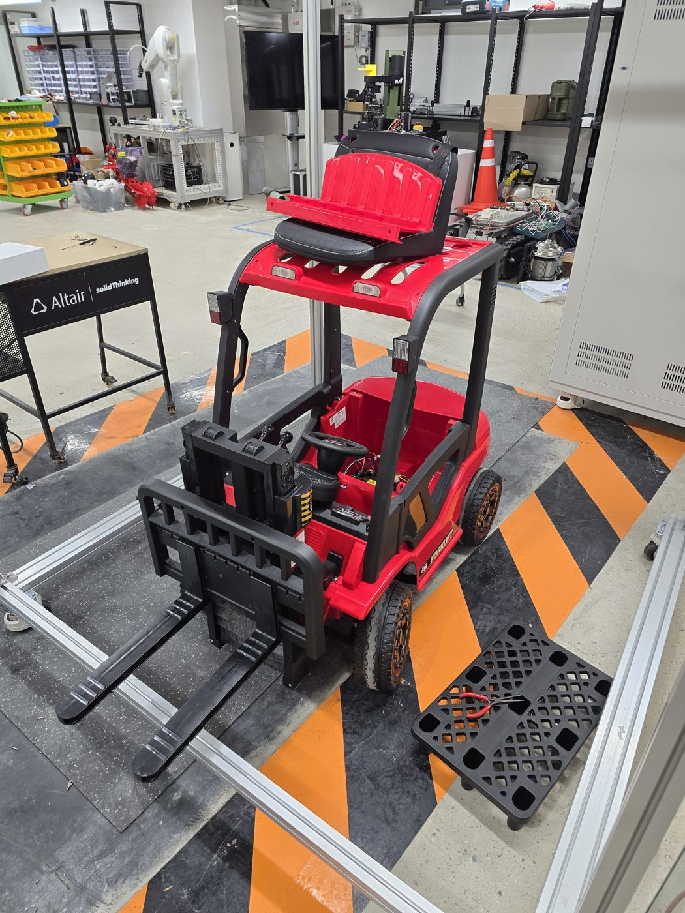
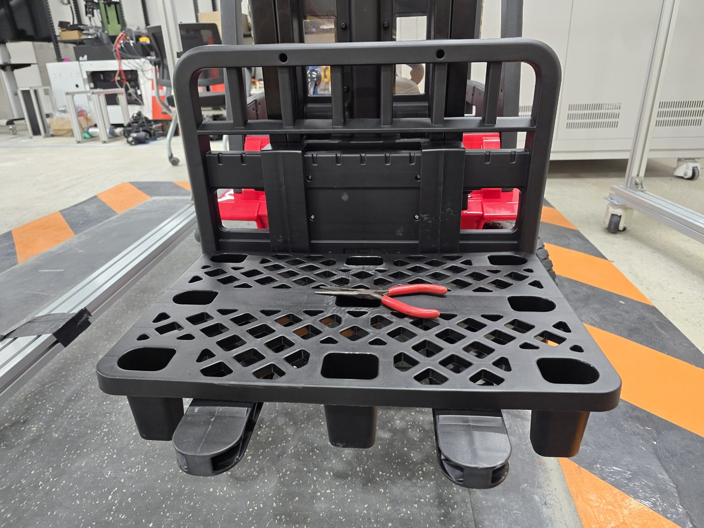
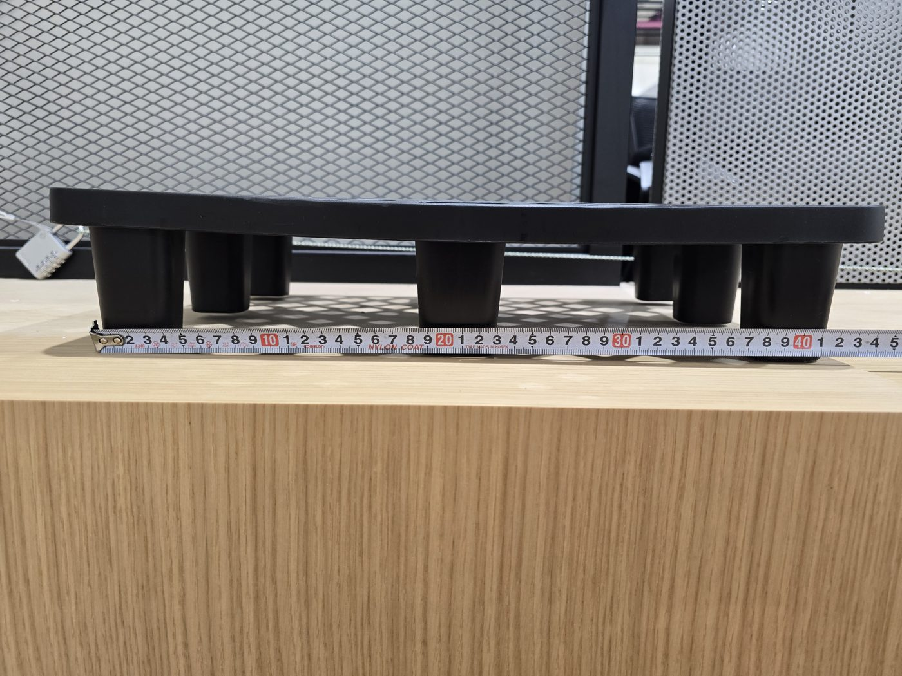
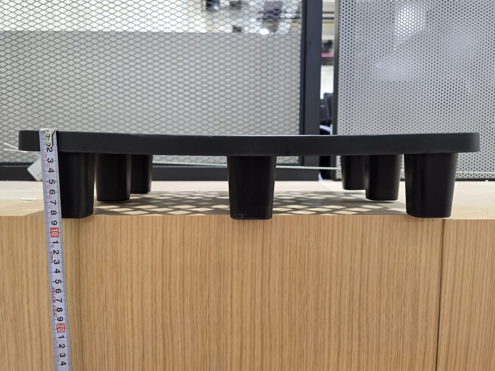
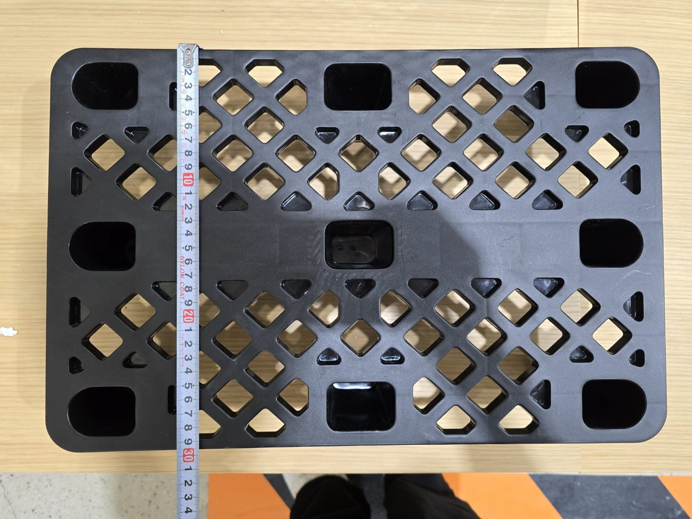
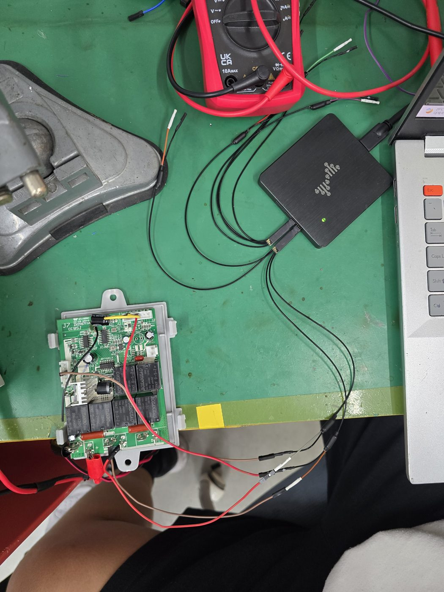
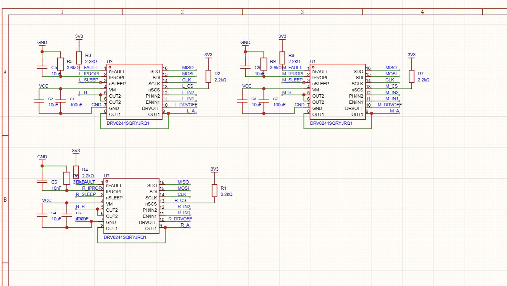
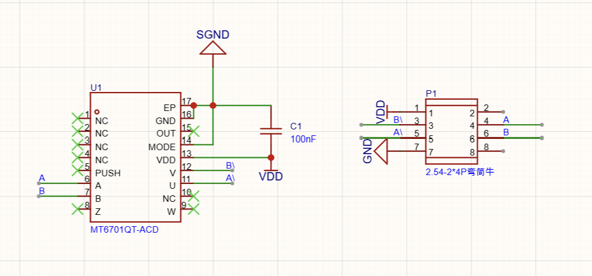
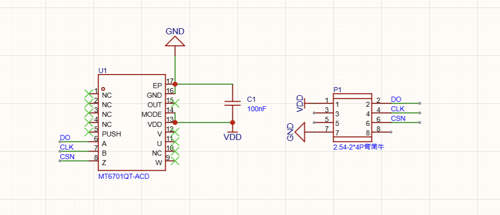
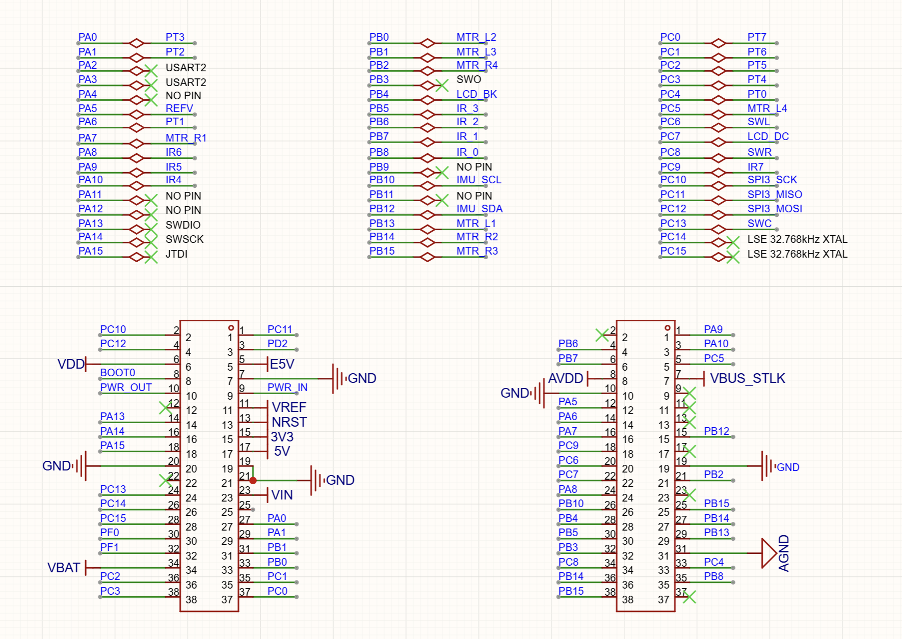

전류 측정 내장
IPROPI 핀 → MCU ADC로 모터 전류
막힘·포크 끝단 감지에 활용

| 항목 | 실측 | 잠정 모델 |
|---|---|---|
| 축간 거리 · 윤거 | 0.66 · 0.53 m | 0.64 · 0.51 m (사진 추정) |
| 바퀴 반지름 | 0.125 m | 0.135 m (사진 추정) |
| 최대 조향각 | 15° | 25.8° (0.45 rad, 추정) |
| 최소 회전 반경 (계산) | 약 2.5 m | 약 1.3 m |
| 포크 길이 · 폭 · 두께 | 360 · 55 · 25 mm | 420 · 55 · 24 mm (사진 추정) |
| 포크 중심 간격 | 55–380 mm 조절 | 290 mm 고정 (사진 추정) |
| 전장 × 전폭 × 전고 · 질량 | 카탈로그와 동일 | 1.46 × 0.63 × 1.01 m · 24 kg (카탈로그) |
| 승강 범위 | 잠정 모델과 동일 | 280 mm (사진 추정) |

| 항목 | 값 | 비고 |
|---|---|---|
| 외형 (길이 × 폭) | 약 42 × 30 cm | 길이는 다리 바깥 기준 |
| 전체 높이 | 약 8.5 cm | |
| 상판 두께 | 약 2 cm | |
| 포크 진입 높이 | 약 6.5 cm | 바닥 ~ 상판 아래 |
| 구조 | 다리 9개 (3 × 3) | 네 방향 진입 |
| 포크 폭 · 두께 | 5.5 · 2.5 cm | 진입 높이 대비 상하 여유 약 4 cm |
| 포크 중심 간격 | 5.5–38 cm 조절 |




| 장비 | DSLogic Pro |
| 샘플링 | 1 MHz · 2채널 |
| 전원 | 12.23 V |
| 대상 | 관측 | 처리 |
|---|---|---|
| 파형 (측정한 두 선) | 명령 8회, 켜진 동안 변화 0회 → PWM 아님 | — |
| 모터 구동 (회로 조사) | 릴레이 켜짐·꺼짐 · 정·역 전환만 | 대체 |
| 속도 조절 | 기능 자체 없음 | 새로 구현 |
| 무선 수신 | RF 회로가 메인보드에 통합 | 사용 안 함 |
| 전원 스위치 | + 와 V 직결 단순 스위치 | 재활용 |
| 주행 모터 · 리프트 모터 | — | 재활용 |
| 후보 | 전원 | 연속 전류 | 보호·최대 | 전류 측정 |
|---|---|---|---|---|
| DRV8244-Q1 (선정) | 4.5–35 V | DC 4.0 A | OCP 10.5–40 A 선택 | IPROPI 내장 |
| BTS7960 (IBT-2) | — | — | 전류 제한 43 A (typ) | IS 핀 |
| VNH5019 (Pololu) | 5.5–24 V | 12 A | 30 A 최대 | 약 140 mV/A |
| Cytron MD13S | 6–30 V | 13 A | 30 A (10 s) | — |
| DRV8871 | 6.5–45 V | — | 3.6 A 피크 | 없음 |
IPROPI 핀 → MCU ADC로 모터 전류
막힘·포크 끝단 감지에 활용
전류 제한·과전류 임계·슬루율 설정
결함 종류를 레지스터로 확인
연속 전류는 방열이 결정
→ 실측 전류에 맞춰 전류 제한·방열 기판 설계
| 후보 | 분해능 | 출력 | 방식 | 정확도 |
|---|---|---|---|---|
| MT6701 (선정) | 14 bit | I2C · SSI · ABZ · UVW · 아날로그 · PWM | 절대 + 증분 | ±1.5° (max) |
| AS5600 | 12 bit | I2C · 아날로그 · PWM | 절대 | ±1° (시스템 INL) |
| AS5048A/B | 14 bit | SPI 또는 I2C · PWM | 절대 | ±1.2° (온도 포함) |
| AS5047P | 14 bit | SPI · ABI · UVW · PWM | 절대 + 증분 | ±1° (온도 포함) |
| 모터축 쿼드러처 | 제품별 | A/B(Z) | 증분 | 원점 복귀 필요 |
전원을 켜자마자 각도 확인
원점 복귀 동작 불필요
MCU 타이머 엔코더 모드로 직접 계수
비접촉 자석식 · 1–2달러대
"10 bit면 충분" → 14 bit로 충분
성능은 정확도(±1.5°)와 자석 정렬이 좌우

| 구성 | |
|---|---|
| 채널 | L · M · R 3개 |
| 공유 | SPI MISO · MOSI · CLK |
| 채널별 | CS · IN1 · IN2 DRVOFF · nSLEEP · nFAULT |
| 전류 측정 | IPROPI 3.6 kΩ ≈ 0.76 V/A |
| 측정 범위 | 3.3 V → 약 4.4 A |
| 전원 필터 | VM 10 µF + 100 nF |



| 단계 | 표준 운용 절차 (KOSHA · 산업안전보건기준) | 우리 임무 절차 (현재 시뮬레이션) | 대조 | 조치 |
|---|---|---|---|---|
| 접근 | 화물 앞에서 감속 · 일단 정지 → 정면에서 천천히 | 0.6 m/s 접근 → 삽입 시작점 정렬·정지 → 0.055 m/s 삽입 | 일치 | — |
| 삽입 | 백레스트에 닿을 때까지 끝까지 | 360 mm = min(깊이 × 0.6, 차체 한계) · EPAL 6은 60 %, 축소 T11은 차체 한계 | 차이 | 삽입 깊이 기준 재검토 |
| 들기 | 5–10 cm 들어 당기고 내린 뒤 재삽입 → 들기 | 한 번에 20 cm 들기 | 차이 | 재삽입 단계 필요성 검토 |
| 운반 자세 | 포크 바닥 위 약 15–20 cm · 마스트 후경 | 포크 20 cm 유지 · 틸트 없음 (잠정 모델) | 부분 | 틸트 유무는 차체 확인 |
| 속도 | 구내 10 km/h 이하 · 모퉁이·사람 근처 감속·경고음 | 접근 0.6 · 운반 0.3 m/s · 감속 구역·경고음 없음 | 부분 | 감속 구역 · 경고음 추가 |
| 후진 | 충돌 위험 시 후진경보기·경광등 또는 후방감지기 | 후방 확인 수단 없음 | 차이 | 후방 확인 수단 추가 |
| 작업 종료 | 운전위치 이탈 시 포크 최저 위치 | 하역 후 포크를 바닥까지 → 복귀 | 일치 | — |
| 구분 | 항목 |
|---|---|
| 확인할 것 | 최종 시연 장소 · 바닥 (실내·실외) |
| 평가 기준 (성공률 · 시간 · 정밀도) | |
| 시험 팔레트 (EPAL 6 · 축소 T11) · 적재 하중 | |
| 요청할 것 | 주행·승강 모터 사양서 (있다면) |
| 주행·조향·승강 모터 정격 (전압 · 전류) | |
| 실제 지게차 운용 영상 · 데이터 | |
| 함께 정할 것 | 기존 제어기 교체 (DRV8244 신규 제어기) 승인 |
| 리프트 높이 조절 요구 (범위 · 정밀도) | |
| 시험 공간 · 허용 속도 | |
| 안전 정지 요구 (비상정지 · 기울기 · 과적) | |
| 동봉 팔레트 활용 |